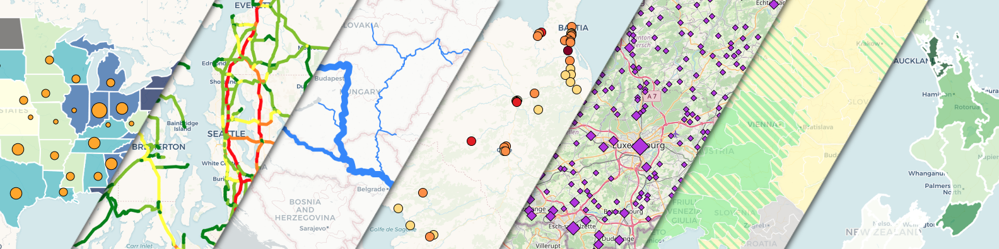

<!doctype html>

<html>
	<head>
		<meta charset="utf-8">
		<title>Leaflet-dataclassification plugin demo page: "polygons_color"</title>
		<link rel="stylesheet" href="https://fonts.googleapis.com/css?family=Open+Sans">

		<!-- leaflet from CDN -->
		<link rel="stylesheet" href="https://unpkg.com/leaflet@1.9.4/dist/leaflet.css" integrity="sha256-p4NxAoJBhIIN+hmNHrzRCf9tD/miZyoHS5obTRR9BMY=" crossorigin="" />
		<script src="https://unpkg.com/leaflet@1.9.4/dist/leaflet.js" integrity="sha256-20nQCchB9co0qIjJZRGuk2/Z9VM+kNiyxNV1lvTlZBo=" crossorigin=""></script>

		<!-- plugin: -->
		<script src="../leaflet-dataclassification.js"></script>
		<link rel="stylesheet" href="../leaflet-dataclassification.css" />	
					
		<!-- dependencies locally: -->
		<script src="../lib/simple-statistics.min.js"></script>		<!-- https://github.com/simple-statistics/simple-statistics -->
		<script src="../lib/chroma.min.cjs"></script>				<!-- https://github.com/gka/chroma.js -->
		
		<style>
			html, body {
				height: 100%;
				margin: 0;
				font-family: 'Open Sans', 'OpenSans-Local';
				font-style: normal;				
			}
			
			#map {
				position: absolute;
				margin:  auto;
				top: 0;
				bottom: 0;
				left: 0;
				right: 0;
			}	
			
			/* Overriding Chrome's built-in CSS rules to avoid focus rectangle on clicking polygons on a Leaflet map */
			path.leaflet-interactive:focus {
				outline: none;
			}					
		</style>
	</head>
	<body>		
		<div id="map"></div>				
		<script>
		
			// base maps
			var OSM = L.tileLayer('https://{s}.tile.openstreetmap.org/{z}/{x}/{y}.png', {
				attribution: '&copy; <a href="https://www.openstreetmap.org/copyright" target="_blank">OpenStreetMap</a> contributors'
			});
			var carto_attrib = '&copy; <a href="http://www.openstreetmap.org/copyright">OpenStreetMap</a>, &copy; <a href="https://carto.com/attributions">CARTO</a>'
			var cartodb_dark = L.tileLayer('https://{s}.basemaps.cartocdn.com/dark_all/{z}/{x}/{y}' + (L.Browser.retina ? '@2x.png' : '.png'), {
				attribution: carto_attrib,
				subdomains: 'abcd',
				maxZoom: 20,
				minZoom: 0
			});
			var cartodb_voyager = L.tileLayer('https://{s}.basemaps.cartocdn.com/rastertiles/voyager/{z}/{x}/{y}' + (L.Browser.retina ? '@2x.png' : '.png'), {
				attribution: carto_attrib,
				subdomains: 'abcd',
				maxZoom: 20,
				minZoom: 0
			});
			var cartodb_positron = L.tileLayer('https://{s}.basemaps.cartocdn.com/light_all/{z}/{x}/{y}' + (L.Browser.retina ? '@2x.png' : '.png'), {
				attribution: carto_attrib,
				subdomains: 'abcd',
				maxZoom: 20,
				minZoom: 0
			});
			var baseMaps = {
				"OpenStreetMap": OSM,
				"CARTO Dark": cartodb_dark,
				"CARTO Voyager": cartodb_voyager,
				"CARTO Positron": cartodb_positron
			};
			// map div object, main Leaflet object:
			var map = L.map('map', {layers: [cartodb_positron]}); 
			map.attributionControl.setPrefix('<a href="https://leafletjs.com" title="A JavaScript library for interactive maps">Leaflet ' + L.version + '</a>');
			map.createPane('front');
			map.getPane('front').style.zIndex = 450;

			// Polygon features example. Attribute to test with: 'voterturnout'
			fetch('data/us_pres_elections_2020_turnout_bycounty.geojson').then(r => r.json()).then(d => {

				var origstyle;
				function highlight(e) {
					origstyle = {
						weight: e.target.options.weight
					}
					e.target.setStyle({
						weight: 5
					});
				}
				function resetStyle(e) {
					e.target.setStyle(origstyle);
				}

				function tooltip(feature, layer) {
					layer.on('mousemove',e=>{
						e.target.getTooltip().setLatLng(e.latlng);
					});
					if (feature.properties.voterturnout) {
						layer.bindTooltip('<b>' + feature.properties.County + ' County</b><br>'+ 
						'State: '+feature.properties.State+'<br>'+
						'Voter turnout: '+feature.properties.voterturnout+' %');
					} else {
						layer.bindTooltip('<b>' + feature.properties.County + ' County</b><br>'+ 
						'State: '+feature.properties.State+'<br>'+
						'Voter turnout: no data');
					}
					layer.on({
						mouseover: highlight,
						mouseout: resetStyle
					});

				}

				window.testdata = L.dataClassification(d, {
					style: {
						color: 'white',
						weight: 0.5,
						fillOpacity: 1
					},
					mode: 'quantile',
					classes: 4,
					field: 'voterturnout',
					colorRamp: ['#ebaf50', '#7860a8'],
					noDataColor: '#aaaaaa',
					classRounding: 0,
					legendTitle: 'Voter turnout (%)',
					legendFooter: 'Percentage of citizen population<br>aged 18 or older who voted in the<br>2020 U.S. Presidential election',
    				attribution: "Administrative boundaries: <a href='https://gist.github.com/sdwfrost/d1c73f91dd9d175998ed166eb216994a' target='_blank'>sdwfrost (GitHub Gist)</a>, Election data: <a href='https://www.countyhealthrankings.org/health-data/methodology-and-sources/rankings-data-documentation' target='_blank'>University of Wisconsin Population Health Institute. County Health Rankings & Roadmaps 2023. www.countyhealthrankings.org. </a>",
					onEachFeature: tooltip
				}).addTo(map);
				map.fitBounds([[25, -122], [50, -64]]);
			});

			// us states' outlines overlay
			fetch('data/us-states.geojson').then(r => r.json()).then(d => {
				window.states = L.geoJSON(d, {
					style: {
						color: 'white',
						fill: false
					},
					pane: 'front',
				}).addTo(map);
			}).then(a => {
				var layerControl = L.control.layers(baseMaps, {"US States": states}, {collapsed: false}).addTo(map);
			});

			var infopanel = L.control({position: 'bottomright'});
			infopanel.onAdd = function (map) {
				var div = L.DomUtil.create('div', 'info');
				div.innerHTML += 
					'<div style="display: flex; flex-direction: column; max-width: 505px; text-align: center; row-gap: 8px"">' +
						'<div style="font-weight: bold;">' + 
							'Leaflet-dataclassification plugin demo page: "polygons_color2"' + 
						'</div>'+ 
						'<div style="text-align: justify">' +
							'This is an example page showcasing some of the features of Leaflet plugin <i>leaflet-dataclassification</i>. '+
							'Feature highlighting and tooltips on hover (native features of Leaflet) were added to provide an easy check of both source and normalized values. '+
							'<br><br>'+
						'</div>'+ 
						'<div>'+ 
							'Single-step data classification, symbology and legend creation for GeoJSON data powered thematic maps.'+
							'<br><br>'+
							'Demos: <a href="./combined.html">combined</a>, <a href="./points_c.html">points_c</a>, <a href="./points_s.html">points_s</a>, <a href="./lines_c.html">lines_c</a>, <a href="./lines_w.html">lines_w</a>, <a href="./polygons_c.html">polygons_c</a>, <a href="./polygons_h.html">polygons_h</a>'+
							'<br><br>'+
							'Project page: <b><a href="https://github.com/balladaniel/leaflet-dataclassification">https://github.com/balladaniel/leaflet-dataclassification</a></b>'+
						'</div>'+ 
							'<a href="https://github.com/balladaniel/leaflet-dataclassification"></img></a>'+
					'</div>';
				return div;
			}
			infopanel.addTo(map);

		</script>	
	</body>
</html>